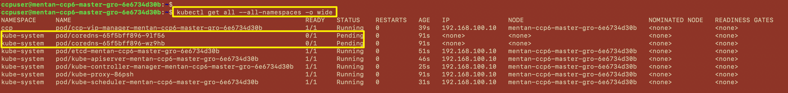
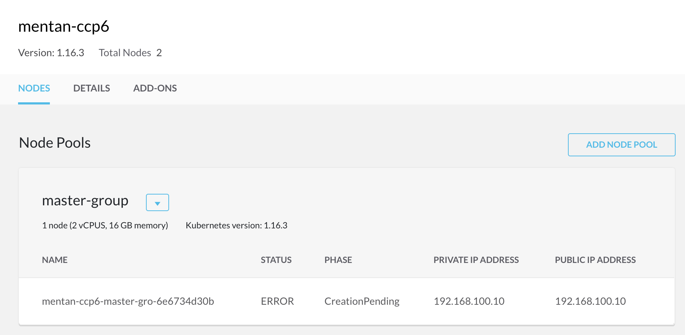
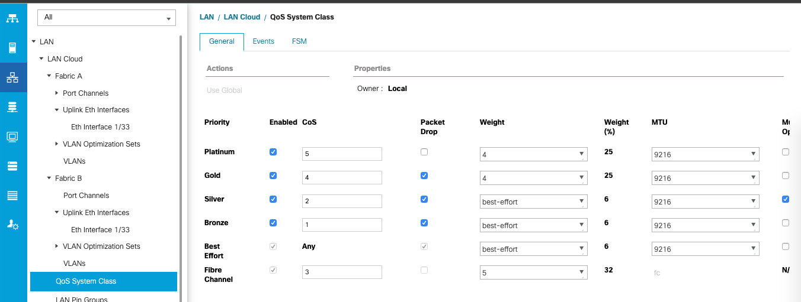
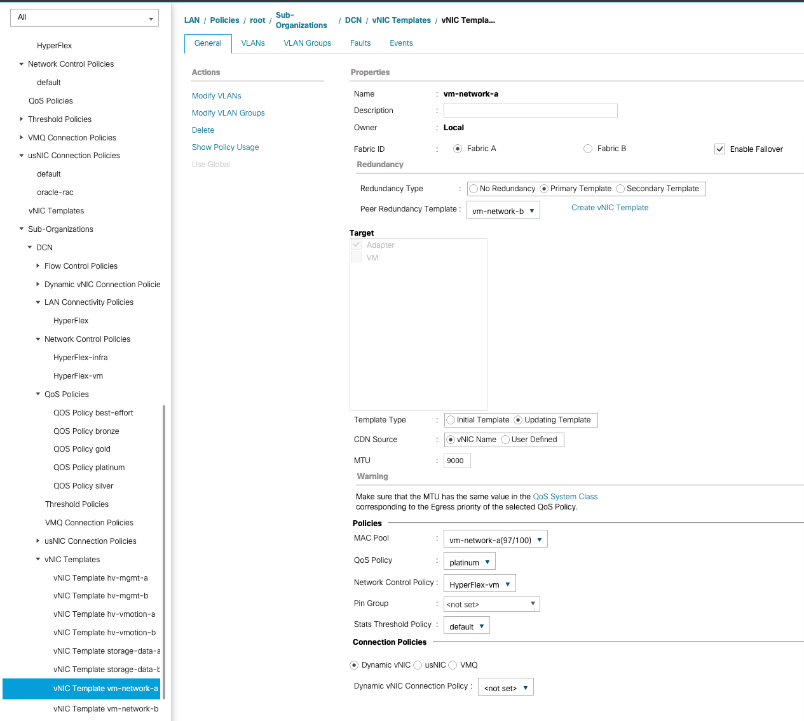
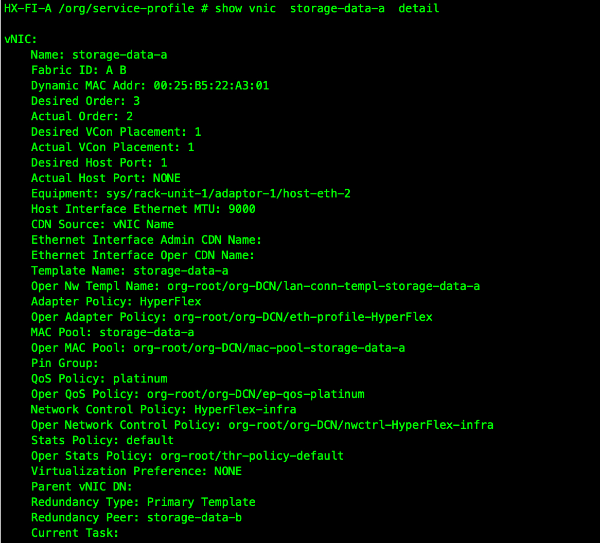
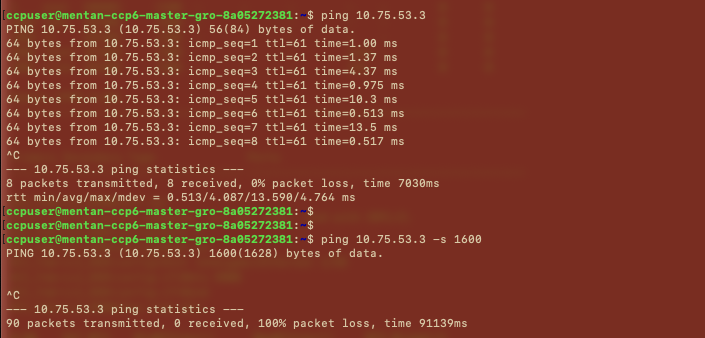
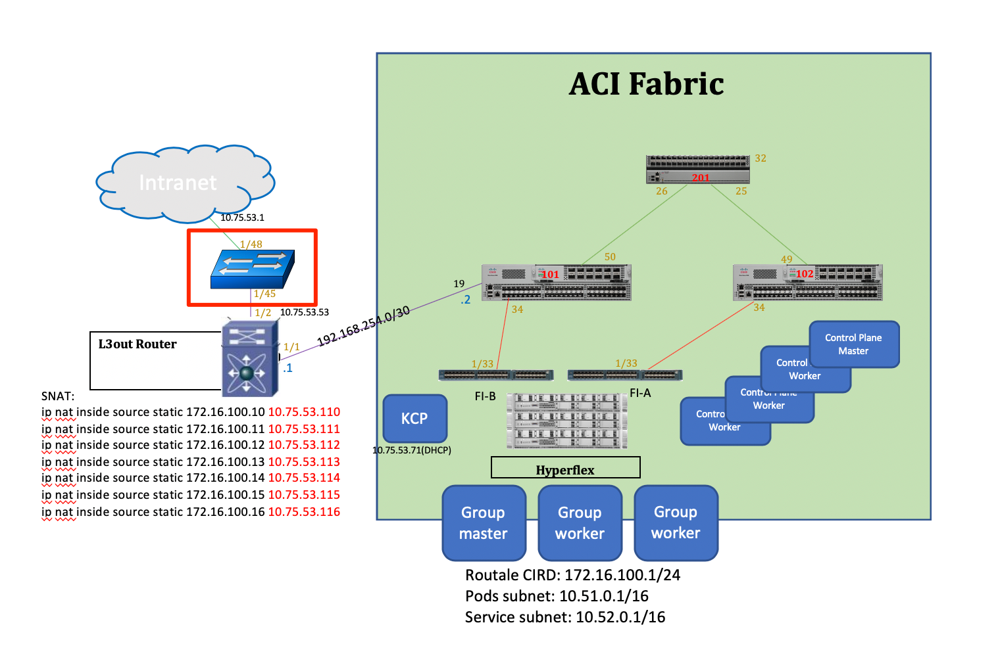

CCP 排障
Issue 1： coredns pod stuck in pending
故障现象：
coredns pod处于pending状态导致master node部署失败

Cluster中的master node部署失败 
排障过程
Note: CCP部署的node是minimal的ubuntu，不包含ping等命令，可以使用下面的方法加入ping应用
apt-get update
apt-get install iputils-ping
检查coredns log，没有输出
ccpuser@mentan-ccp6-master-gro-6e6734d30b:~$
ccpuser@mentan-ccp6-master-gro-6e6734d30b:~$ kubectl logs -f coredns-65f5bff896-wz9hb -n kube-system
ccpuser@mentan-ccp6-master-gro-6e6734d30b:~$
查看coredns pod详细信息
ccpuser@mentan-ccp6-master-gro-6e6734d30b:~$ kubectl describe pod coredns-65f5bff896-wz9hb -n kube-system
Name: coredns-65f5bff896-wz9hb
Namespace: kube-system
Priority: 2000000000
Priority Class Name: system-cluster-critical
Node: <none>
Labels: k8s-app=kube-dns
pod-template-hash=65f5bff896
Annotations: <none>
Status: Pending <<<<<<<<<<<<<<<<<<<
IP:
IPs: <none>
Controlled By: ReplicaSet/coredns-65f5bff896
Containers:
coredns:
Image: registry.ci.ciscolabs.com/cpsg_ccp/k8s.gcr.io/coredns:1.6.2
Ports: 53/UDP, 53/TCP, 9153/TCP
Host Ports: 0/UDP, 0/TCP, 0/TCP
Args:
-conf
/etc/coredns/Corefile
Limits:
memory: 170Mi
Requests:
cpu: 100m
memory: 70Mi
Liveness: http-get http://:8080/health delay=60s timeout=5s period=10s #success=1 #failure=5
Readiness: http-get http://:8181/ready delay=0s timeout=1s period=10s #success=1 #failure=3
Environment: <none>
Mounts:
/etc/coredns from config-volume (ro)
/var/run/secrets/kubernetes.io/serviceaccount from coredns-token-z9hqz (ro)
Conditions:
Type Status
PodScheduled False
Volumes:
config-volume:
Type: ConfigMap (a volume populated by a ConfigMap)
Name: coredns
Optional: false
coredns-token-z9hqz:
Type: Secret (a volume populated by a Secret)
SecretName: coredns-token-z9hqz
Optional: false
QoS Class: Burstable
Node-Selectors: beta.kubernetes.io/os=linux
Tolerations: CriticalAddonsOnly
node-role.kubernetes.io/master:NoSchedule
node.kubernetes.io/not-ready:NoExecute for 300s
node.kubernetes.io/unreachable:NoExecute for 300s
Events:
Type Reason Age From Message
---- ------ ---- ---- -------
Warning FailedScheduling 89s (x297 over 7h22m) default-scheduler 0/1 nodes are available: 1 node(s) had taints that the pod didn't tolerate. <<<<<<<<<<<<<<<<<<<<<
ccpuser@mentan-ccp6-master-gro-6e6734d30b:~$
检查coredns ConfigMap
kubectl edit cm coredns -n kube-system
# Please edit the object below. Lines beginning with a '#' will be ignored,
# and an empty file will abort the edit. If an error occurs while saving this file will be
# reopened with the relevant failures.
#
apiVersion: v1
data:
Corefile: ".:53 {\n errors\n health\n ready\n kubernetes cluster.local
in-addr.arpa ip6.arpa {\n pods insecure\n fallthrough in-addr.arpa
ip6.arpa\n ttl 30\n }\n prometheus :9153\n forward . /etc/resolv.conf\n
\ cache 30\n \n reload\n loadbalance\n}\n"
kind: ConfigMap
metadata:
annotations:
kubectl.kubernetes.io/last-applied-configuration: |
{"apiVersion":"v1","data":{"Corefile":".:53 {\n errors\n health\n ready\n kubernetes cluster.local in-addr.arpa ip6.arpa {\n pods insecure\n fallthrough in-addr.arpa ip6.arpa\n ttl 30\n }\n prometheus :9153\n forward . /etc/resolv.conf\n cache 30\n \n reload\n loadbalance\n}\n"},"kind":"ConfigMap","metadata":{"annotations":{},"creationTimestamp":"2020-04-16T16:58:00Z","name":"coredns","namespace":"kube-system","resourceVersion":"175","selfLink":"/api/v1/namespaces/kube-system/configmaps/coredns","uid":"3ed0b0e3-640a-4dda-98ff-8fc897e159c4"}}
creationTimestamp: "2020-04-16T16:58:00Z"
name: coredns
namespace: kube-system
resourceVersion: "224"
selfLink: /api/v1/namespaces/kube-system/configmaps/coredns uid: 3ed0b0e3-640a-4dda-98ff-8fc897e159c4
检查resolv.conf配置
ccpuser@mentan-ccp6-master-gro-6e6734d30b:~$ more /etc/resolv.conf
# Dynamic resolv.conf(5) file for glibc resolver(3) generated by resolvconf(8)
# DO NOT EDIT THIS FILE BY HAND -- YOUR CHANGES WILL BE OVERWRITTEN
# 127.0.0.53 is the systemd-resolved stub resolver.
# run "systemd-resolve --status" to see details about the actual nameservers.
nameserver 64.104.123.245
通过nslookup检查主机DNS，一切正常。
检查CCP安装日志, 有很多"network plugin is not ready"的错误
more /var/log/syslog
...
Apr 20 03:16:19 mentan-ccp6-master-gro-fedf9b35d0 kubelet[3358]: W0420 03:16:19.212243 3358 cni.go:237] Unable to update cni config: no networks found in /etc/cni/net.d
Apr 20 03:16:23 mentan-ccp6-master-gro-fedf9b35d0 kubelet[3358]: E0420 03:16:23.267608 3358 kubelet.go:2187] Container runtime network not ready: NetworkReady=false reason:NetworkPluginNotReady message:docker: network plugin is not ready: cni config uninitialized
Apr 20 03:16:24 mentan-ccp6-master-gro-fedf9b35d0 kubelet[3358]: W0420 03:16:24.212638 3358 cni.go:237] Unable to update cni config: no networks found in /etc/cni/net.d
Apr 20 03:16:24 mentan-ccp6-master-gro-fedf9b35d0 systemd[1]: Started Session 21 of user ccpuser.
Apr 20 03:16:28 mentan-ccp6-master-gro-fedf9b35d0 kubelet[3358]: E0420 03:16:28.269207 3358 kubelet.go:2187] Container runtime network not ready: NetworkReady=false reason:NetworkPluginNotReady message:docker: network plugin is not ready: cni config uninitialized
Apr 20 03:16:29 mentan-ccp6-master-gro-fedf9b35d0 kubelet[3358]: W0420 03:16:29.213033 3358 cni.go:237] Unable to update cni config: no networks found in /etc/cni/net.d
检查HX MTU, 已经被设置为9216   
ccpuser@mentan-ccp6-master-gro-fedf9b35d0:~$ kubectl describe node
Name: mentan-ccp6-master-gro-fedf9b35d0
Roles: master
Labels: beta.kubernetes.io/arch=amd64
beta.kubernetes.io/os=linux
kubernetes.io/arch=amd64
kubernetes.io/hostname=mentan-ccp6-master-gro-fedf9b35d0
kubernetes.io/os=linux
node-role.kubernetes.io/master=
Annotations: kubeadm.alpha.kubernetes.io/cri-socket: /var/run/dockershim.sock
node.alpha.kubernetes.io/ttl: 0
volumes.kubernetes.io/controller-managed-attach-detach: true
CreationTimestamp: Mon, 20 Apr 2020 02:05:54 +0000
Taints: node-role.kubernetes.io/master:NoSchedule
node.kubernetes.io/not-ready:NoSchedule
Unschedulable: false
Conditions:
Type Status LastHeartbeatTime LastTransitionTime Reason Message
---- ------ ----------------- ------------------ ------ -------
MemoryPressure False Mon, 20 Apr 2020 07:08:03 +0000 Mon, 20 Apr 2020 02:05:50 +0000 KubeletHasSufficientMemory kubelet has sufficient memory available
DiskPressure False Mon, 20 Apr 2020 07:08:03 +0000 Mon, 20 Apr 2020 02:05:50 +0000 KubeletHasNoDiskPressure kubelet has no disk pressure
PIDPressure False Mon, 20 Apr 2020 07:08:03 +0000 Mon, 20 Apr 2020 02:05:50 +0000 KubeletHasSufficientPID kubelet has sufficient PID available
Ready False Mon, 20 Apr 2020 07:08:03 +0000 Mon, 20 Apr 2020 02:05:50 +0000 KubeletNotReady runtime network not ready: NetworkReady=false reason:NetworkPluginNotReady message:docker: network plugin is not ready: cni config uninitialized <<<<<<<<<<<<<<<<<<<<<<<<<<
Addresses:
ExternalIP: 192.168.100.10
InternalIP: 192.168.100.10
Hostname: mentan-ccp6-master-gro-fedf9b35d0
Capacity:
cpu: 2
ephemeral-storage: 40470732Ki
hugepages-1Gi: 0
hugepages-2Mi: 0
memory: 16426480Ki
pods: 110
Allocatable:
cpu: 2
ephemeral-storage: 37297826550
hugepages-1Gi: 0
hugepages-2Mi: 0
memory: 16324080Ki
pods: 110
System Info:
Machine ID: 93c34496f87f4a39b4b6d51766ee71a7
System UUID: 4203BCE9-816E-EB82-BDF0-97599E3F9731
Boot ID: 2479c7d3-3fe9-4112-b5f6-d2a4b1f7e54a
Kernel Version: 4.15.0-64-generic
OS Image: Ubuntu 18.04.3 LTS
Operating System: linux
Architecture: amd64
Container Runtime Version: docker://18.9.9
Kubelet Version: v1.16.3
Kube-Proxy Version: v1.16.3
PodCIDR: 10.51.0.0/24
PodCIDRs: 10.51.0.0/24
ProviderID: vsphere://4203bce9-816e-eb82-bdf0-97599e3f9731
Non-terminated Pods: (6 in total)
Namespace Name CPU Requests CPU Limits Memory Requests Memory Limits AGE
--------- ---- ------------ ---------- --------------- ------------- ---
ccp ccp-vip-manager-mentan-ccp6-master-gro-fedf9b35d0 0 (0%) 0 (0%) 0 (0%) 0 (0%) 5h1m
kube-system etcd-mentan-ccp6-master-gro-fedf9b35d0 0 (0%) 0 (0%) 0 (0%) 0 (0%) 5h1m
kube-system kube-apiserver-mentan-ccp6-master-gro-fedf9b35d0 250m (12%) 0 (0%) 0 (0%) 0 (0%) 5h1m
kube-system kube-controller-manager-mentan-ccp6-master-gro-fedf9b35d0 200m (10%) 0 (0%) 0 (0%) 0 (0%) 5h1m
kube-system kube-proxy-xpdff 0 (0%) 0 (0%) 0 (0%) 0 (0%) 5h2m
kube-system kube-scheduler-mentan-ccp6-master-gro-fedf9b35d0 100m (5%) 0 (0%) 0 (0%) 0 (0%) 5h1m
Allocated resources:
(Total limits may be over 100 percent, i.e., overcommitted.)
Resource Requests Limits
-------- -------- ------
cpu 550m (27%) 0 (0%)
memory 0 (0%) 0 (0%)
ephemeral-storage 0 (0%) 0 (0%)
Events: <none>
从group master 用Jumbo packet ping control-plane master, 发现丢包 
ccpuser@mentan-ccp6-master-gro-8a05272381:~$ tracepath -n 10.75.53.3
1?: [LOCALHOST] pmtu 1600
1: 172.16.100.1 0.576ms asymm 2
1: 172.16.100.1 0.416ms asymm 2
2: 192.168.254.2 0.666ms
3: no reply
4: no reply
5: no reply
6: no reply
7: no reply
8: no reply
9: no reply
10: no reply
11: no reply
12: no reply
13: no reply
14: no reply
15: no reply
16: no reply
17: no reply
18: no reply
19: no reply
20: no reply
21: no reply
22: no reply
23: no reply
24: no reply
25: no reply
26: no reply
27: no reply
28: no reply
29: no reply
30: no reply
Too many hops: pmtu 1600
Resume: pmtu 1600
ccpuser@mentan-ccp6-master-gro-8a05272381:~$
经过梳理lab拓扑，发现可能存在MTU的问题在上行的OOB 4948 switch

根据下面的4500 Jumbo frame排错文档，将OOB 4948 switch的MTU调整为9000
https://www.cisco.com/c/en/us/support/docs/switches/catalyst-4000-series-switches/29805-175.html
OOB 4948 MTU状态如下
ACI_Fabric2_OOB#show vlan mtu
VLAN SVI_MTU MinMTU(port) MaxMTU(port) MTU_Mismatch
---- ------------- ---------------- --------------- ------------
1 9000 9000 9000 No
1002 - 9000 9000 No
1003 - 9000 9000 No
1004 - 9000 9000 No
1005 - 9000 9000 No
ACI_Fabric2_OOB#show interfaces mtu
Port Name MTU
Gi1/1 9000
Gi1/2 9000
Gi1/3 9000
Gi1/4 9000
Gi1/5 9000
Gi1/6 9000
Gi1/7 9000
Gi1/8 9000
Gi1/9 9000
Gi1/10 9000
Gi1/11 9000
Gi1/12 9000
Gi1/13 9000
Gi1/14 9000
Gi1/15 9000
Gi1/16 9000
Gi1/17 9000
Gi1/18 9000
Gi1/19 9000
Gi1/20 9000
Gi1/21 9000
Gi1/22 9000
Gi1/23 9000
Gi1/24 9000
Gi1/25 9000
Gi1/26 9000
Gi1/27 9000
Gi1/28 9000
Gi1/29 9000
Gi1/30 9000
Gi1/31 9000
Gi1/32 9000
Gi1/33 9000
Gi1/34 9000
Gi1/35 9000
Gi1/36 9000
Gi1/37 9000
Gi1/38 9000
Gi1/39 9000
Gi1/40 9000
Gi1/41 9000
Gi1/42 9000
Gi1/43 9000
Gi1/44 9000
Gi1/45 9000
Gi1/46 9000
Gi1/47 9000
Gi1/48 9000
Te1/49 9000
Te1/50 9000
ACI_Fabric2_OOB#
经过上述调整后，发现MTU问题解决
ccpuser@mentan-ccp6-master-gro-8a05272381:~$ ping 10.75.53.3 -s 8900
PING 10.75.53.3 (10.75.53.3) 8900(8928) bytes of data.
8908 bytes from 10.75.53.3: icmp_seq=1 ttl=61 time=1.65 ms
8908 bytes from 10.75.53.3: icmp_seq=2 ttl=61 time=1.58 ms
8908 bytes from 10.75.53.3: icmp_seq=3 ttl=61 time=1.60 ms
8908 bytes from 10.75.53.3: icmp_seq=4 ttl=61 time=2.13 ms
8908 bytes from 10.75.53.3: icmp_seq=5 ttl=61 time=1.58 ms
^C
--- 10.75.53.3 ping statistics ---
5 packets transmitted, 5 received, 0% packet loss, time 4006ms
rtt min/avg/max/mdev = 1.583/1.713/2.138/0.215 ms
ccpuser@mentan-ccp6-master-gro-8a05272381:~$ tracepath -n 10.75.53.3
1?: [LOCALHOST] pmtu 1600
1: 172.16.100.1 0.544ms asymm 2
1: 172.16.100.1 0.348ms asymm 2
2: 192.168.254.2 0.704ms
3: 10.75.53.3 0.957ms reached
Resume: pmtu 1600 hops 3 back 4
ccpuser@mentan-ccp6-master-gro-8a05272381:~$
但是问题依旧存在！
在Control plane master上进行检查
ccpuser@mentan-ccp6-master1cb612f916:~$ kubectl get all -A
NAMESPACE NAME READY STATUS RESTARTS AGE
default pod/ccp-api-db-job-y6uxn-8vxkt 0/1 Completed 0 7d12h
default pod/ccp-appdata-db-job-20tfm-9s9tb 0/1 Completed 0 7d12h
default pod/ccp-db-job-wq2qx-vsfmx 0/1 Completed 0 7d12h
default pod/ccp-efk-elasticsearch-curator-1587862800-6jfb6 0/1 Completed 0 40h
default pod/ccp-efk-elasticsearch-curator-1587949200-dn5b4 0/1 Completed 0 26h
default pod/ccp-efk-elasticsearch-curator-1588035600-sxgtf 0/1 Completed 0 147m
default pod/ccp-efk-kibana-66d79b8b8-2jhpz 1/1 Running 2 7d12h
default pod/ccp-images-docker-registry-54574d67d4-zzrqp 1/1 Running 2 7d12h
default pod/ccp-monitor-grafana-66c7b84c8f-plxx9 1/1 Running 2 7d12h
default pod/ccp-monitor-grafana-set-datasource-rf5bb 0/1 Completed 0 7d12h
default pod/ccp-monitor-prometheus-alertmanager-55bdd59d7-hkw69 2/2 Running 4 7d12h
default pod/ccp-monitor-prometheus-kube-state-metrics-fb9c45fff-trpzc 1/1 Running 3 7d12h
default pod/ccp-monitor-prometheus-node-exporter-5r7qg 1/1 Running 2 7d12h
default pod/ccp-monitor-prometheus-node-exporter-fbx2j 1/1 Running 2 7d12h
default pod/ccp-monitor-prometheus-node-exporter-nrmcf 1/1 Running 2 7d12h
default pod/ccp-monitor-prometheus-pass-job-e2mhm-c2k95 0/1 Completed 0 7d12h
default pod/ccp-monitor-prometheus-port-update-snq4w-nj2f9 0/1 Completed 0 7d12h
default pod/ccp-monitor-prometheus-pushgateway-54ddd4865-ld8zv 1/1 Running 2 7d12h
default pod/ccp-monitor-prometheus-server-5f94878c47-4rst7 3/3 Running 6 7d12h
default pod/ccp-network-db-job-8lwxw-qt594 0/1 Completed 0 7d12h
default pod/ccp-tinker-manager-6668c7555b-c846k 2/2 Running 4 7d12h
default pod/cert-manager-85f4bfd857-4jcvr 1/1 Running 2 7d12h
default pod/elasticsearch-logging-0 1/1 Running 2 7d12h
default pod/fluentd-es-v2.0.2-6tkx2 1/1 Running 2 7d12h
default pod/fluentd-es-v2.0.2-sg2zv 1/1 Running 2 7d12h
default pod/fluentd-es-v2.0.2-tnl5q 1/1 Running 2 7d12h
default pod/hxcsi-csi-attacher-5974bf5479-wlb47 2/2 Running 4 7d12h
default pod/hxcsi-csi-nodeplugin-4j7w7 2/2 Running 4 7d12h
default pod/hxcsi-csi-nodeplugin-8prvr 2/2 Running 4 7d12h
default pod/hxcsi-csi-nodeplugin-f9jnq 2/2 Running 4 7d12h
default pod/hxcsi-csi-provisioner-54b4958f8f-fwkqt 2/2 Running 5 7d12h
default pod/kaas-api-7dc457d59-hsztr 1/1 Running 2 7d12h
default pod/kaas-appdata-67564f8f5b-5x8ct 1/1 Running 2 7d12h
default pod/kaas-ccp-aks-operator-74dbcd4985-xvnxx 1/1 Running 3 7d12h
default pod/kaas-ccp-cluster-operator-b5fc6b794-rgk9m 1/1 Running 2 7d12h
default pod/kaas-ccp-eks-operator-7d6cd6b49b-9jjrn 1/1 Running 2 7d12h
default pod/kaas-ccp-vsphere-operator-5646b6b975-tfbtm 1/1 Running 3 7d12h
default pod/kaas-corc-6b9fb75bbd-mjszd 1/1 Running 2 7d12h
default pod/kaas-cx-aes-key-job-4i3i2-r8dlc 0/1 Completed 0 7d12h
default pod/kaas-dashboard-6c56cbd9d-b5s9j 1/1 Running 4 7d12h
default pod/kaas-network-d475b45c4-hjxg4 1/1 Running 2 7d12h
default pod/kaas-network-d475b45c4-vjrgn 1/1 Running 2 7d12h
default pod/kaas-network-initdb-1lzjb-cfjrr 0/1 Completed 0 7d12h
default pod/kaas-sddc-55b4f55f99-28h6t 1/1 Running 2 7d12h
default pod/kaas-slagent-9558db56c-z75zh 1/1 Running 2 7d12h
default pod/kaas-slagent-xt6qz-fhcnw 0/1 Completed 2 7d12h
default pod/metallb-controller-598ff9f5c5-f8tbd 1/1 Running 2 7d12h
default pod/metallb-speaker-jwppt 1/1 Running 2 7d12h
default pod/metallb-speaker-kv4nj 1/1 Running 2 7d12h
default pod/metallb-speaker-sm6dg 1/1 Running 2 7d12h
default pod/metallb-speaker-tz5qd 1/1 Running 2 7d12h
default pod/mysql-0 1/1 Running 3 7d12h
default pod/nginx-ingress-controller-4nflt 1/1 Running 2 7d12h
default pod/nginx-ingress-controller-mdg85 1/1 Running 2 7d12h
default pod/nginx-ingress-controller-qtczf 1/1 Running 2 7d12h
default pod/nginx-ingress-default-backend-868c85bf9-46b8r 1/1 Running 2 7d12h
default pod/vsphere-cluster-conversion-webhook-66c44fccb9-9kkm9 1/1 Running 2 7d12h
default pod/wsrep-pass-chage-job-1wepm-jr9k5 0/1 Completed 0 7d12h
kube-system pod/calico-kube-controllers-67878b79d6-4znbr 1/1 Running 2 7d12h
kube-system pod/calico-node-c7lbx 1/1 Running 2 7d12h
kube-system pod/calico-node-mz8wj 1/1 Running 2 7d12h
kube-system pod/calico-node-rw622 1/1 Running 2 7d12h
kube-system pod/calico-node-xbgls 1/1 Running 2 7d12h
kube-system pod/coredns-775bbfc78d-l799n 1/1 Running 2 7d12h
kube-system pod/coredns-775bbfc78d-x4hk4 1/1 Running 2 7d12h
kube-system pod/etcd-mentan-ccp6-master1cb612f916 1/1 Running 2 7d12h
kube-system pod/kube-apiserver-mentan-ccp6-master1cb612f916 1/1 Running 2 7d12h
kube-system pod/kube-controller-manager-mentan-ccp6-master1cb612f916 1/1 Running 2 7d12h
kube-system pod/kube-proxy-gw4k5 1/1 Running 2 7d12h
kube-system pod/kube-proxy-ljzn8 1/1 Running 2 7d12h
kube-system pod/kube-proxy-qggp5 1/1 Running 2 7d12h
kube-system pod/kube-proxy-qmtch 1/1 Running 2 7d12h
kube-system pod/kube-scheduler-mentan-ccp6-master1cb612f916 1/1 Running 2 7d12h
kube-system pod/nvidia-device-plugin-daemonset-lsh6s 1/1 Running 2 7d12h
kube-system pod/nvidia-device-plugin-daemonset-nmvnl 1/1 Running 2 7d12h
kube-system pod/nvidia-device-plugin-daemonset-zgx4g 1/1 Running 2 7d12h
NAMESPACE NAME TYPE CLUSTER-IP EXTERNAL-IP PORT(S) AGE
default service/aks-webhook ClusterIP 10.101.123.154 <none> 443/TCP 7d12h
default service/ccp-efk-kibana ClusterIP 10.98.197.209 <none> 5601/TCP 7d12h
default service/ccp-images-docker-registry ClusterIP 10.104.235.178 <none> 443/TCP 7d12h
default service/ccp-monitor-grafana ClusterIP 10.108.39.113 <none> 80/TCP 7d12h
default service/ccp-monitor-prometheus-alertmanager ClusterIP 10.109.97.8 <none> 80/TCP 7d12h
default service/ccp-monitor-prometheus-kube-state-metrics ClusterIP None <none> 80/TCP 7d12h
default service/ccp-monitor-prometheus-node-exporter ClusterIP None <none> 9100/TCP 7d12h
default service/ccp-monitor-prometheus-pushgateway ClusterIP 10.97.132.250 <none> 9091/TCP 7d12h
default service/ccp-monitor-prometheus-server ClusterIP 10.98.116.10 <none> 443/TCP 7d12h
default service/cert-manager ClusterIP 10.102.218.253 <none> 9402/TCP 7d12h
default service/elasticsearch-logging ClusterIP 10.105.180.251 <none> 9200/TCP 7d12h
default service/kaas-api ClusterIP 10.108.54.182 <none> 8000/TCP 7d12h
default service/kaas-appdata ClusterIP 10.99.174.47 <none> 8000/TCP 7d12h
default service/kaas-corc ClusterIP 10.101.117.202 <none> 8082/TCP 7d12h
default service/kaas-dashboard ClusterIP 10.104.36.58 <none> 8000/TCP 7d12h
default service/kaas-network ClusterIP 10.110.19.160 <none> 3316/TCP 7d12h
default service/kaas-sddc ClusterIP 10.104.183.251 <none> 8087/TCP 7d12h
default service/kaas-slagent ClusterIP 10.103.193.128 <none> 8443/TCP 7d12h
default service/kubernetes ClusterIP 10.96.0.1 <none> 443/TCP 7d12h
default service/mysql ClusterIP None <none> 3306/TCP 7d12h
default service/mysql-public ClusterIP 10.106.181.47 <none> 3306/TCP 7d12h
default service/nginx-ingress-controller LoadBalancer 10.111.255.149 10.75.53.2 80:30112/TCP,443:30503/TCP 7d12h
default service/nginx-ingress-default-backend ClusterIP 10.101.122.253 <none> 80/TCP 7d12h
default service/vsphere-cluster-conversion-webhook ClusterIP 10.109.26.224 <none> 443/TCP 7d12h
default service/vsphere-webhook-server ClusterIP 10.106.167.166 <none> 443/TCP 7d12h
kube-system service/calico-typha ClusterIP 10.110.102.239 <none> 5473/TCP 7d12h
kube-system service/kube-dns ClusterIP 10.96.0.10 <none> 53/UDP,53/TCP,9153/TCP 7d12h
NAMESPACE NAME DESIRED CURRENT READY UP-TO-DATE AVAILABLE NODE SELECTOR AGE
default daemonset.apps/ccp-monitor-prometheus-node-exporter 3 3 3 3 3 <none> 7d12h
default daemonset.apps/fluentd-es-v2.0.2 3 3 3 3 3 <none> 7d12h
default daemonset.apps/hxcsi-csi-nodeplugin 3 3 3 3 3 <none> 7d12h
default daemonset.apps/metallb-speaker 4 4 4 4 4 beta.kubernetes.io/os=linux 7d12h
default daemonset.apps/nginx-ingress-controller 3 3 3 3 3 <none> 7d12h
kube-system daemonset.apps/calico-node 4 4 4 4 4 beta.kubernetes.io/os=linux 7d12h
kube-system daemonset.apps/kube-proxy 4 4 4 4 4 beta.kubernetes.io/os=linux 7d12h
kube-system daemonset.apps/nvidia-device-plugin-daemonset 3 3 3 3 3 <none> 7d12h
NAMESPACE NAME READY UP-TO-DATE AVAILABLE AGE
default deployment.apps/ccp-efk-kibana 1/1 1 1 7d12h
default deployment.apps/ccp-images-docker-registry 1/1 1 1 7d12h
default deployment.apps/ccp-monitor-grafana 1/1 1 1 7d12h
default deployment.apps/ccp-monitor-prometheus-alertmanager 1/1 1 1 7d12h
default deployment.apps/ccp-monitor-prometheus-kube-state-metrics 1/1 1 1 7d12h
default deployment.apps/ccp-monitor-prometheus-pushgateway 1/1 1 1 7d12h
default deployment.apps/ccp-monitor-prometheus-server 1/1 1 1 7d12h
default deployment.apps/ccp-tinker-manager 1/1 1 1 7d12h
default deployment.apps/cert-manager 1/1 1 1 7d12h
default deployment.apps/hxcsi-csi-attacher 1/1 1 1 7d12h
default deployment.apps/hxcsi-csi-provisioner 1/1 1 1 7d12h
default deployment.apps/kaas-api 1/1 1 1 7d12h
default deployment.apps/kaas-appdata 1/1 1 1 7d12h
default deployment.apps/kaas-ccp-aks-operator 1/1 1 1 7d12h
default deployment.apps/kaas-ccp-cluster-operator 1/1 1 1 7d12h
default deployment.apps/kaas-ccp-eks-operator 1/1 1 1 7d12h
default deployment.apps/kaas-ccp-vsphere-operator 1/1 1 1 7d12h
default deployment.apps/kaas-corc 1/1 1 1 7d12h
default deployment.apps/kaas-dashboard 1/1 1 1 7d12h
default deployment.apps/kaas-network 2/2 2 2 7d12h
default deployment.apps/kaas-sddc 1/1 1 1 7d12h
default deployment.apps/kaas-slagent 1/1 1 1 7d12h
default deployment.apps/metallb-controller 1/1 1 1 7d12h
default deployment.apps/nginx-ingress-default-backend 1/1 1 1 7d12h
default deployment.apps/vsphere-cluster-conversion-webhook 1/1 1 1 7d12h
kube-system deployment.apps/calico-kube-controllers 1/1 1 1 7d12h
kube-system deployment.apps/calico-typha 0/0 0 0 7d12h
kube-system deployment.apps/coredns 2/2 2 2 7d12h
NAMESPACE NAME DESIRED CURRENT READY AGE
default replicaset.apps/ccp-efk-kibana-66d79b8b8 1 1 1 7d12h
default replicaset.apps/ccp-images-docker-registry-54574d67d4 1 1 1 7d12h
default replicaset.apps/ccp-monitor-grafana-66c7b84c8f 1 1 1 7d12h
default replicaset.apps/ccp-monitor-prometheus-alertmanager-55bdd59d7 1 1 1 7d12h
default replicaset.apps/ccp-monitor-prometheus-kube-state-metrics-fb9c45fff 1 1 1 7d12h
default replicaset.apps/ccp-monitor-prometheus-pushgateway-54ddd4865 1 1 1 7d12h
default replicaset.apps/ccp-monitor-prometheus-server-5f94878c47 1 1 1 7d12h
default replicaset.apps/ccp-tinker-manager-6668c7555b 1 1 1 7d12h
default replicaset.apps/cert-manager-85f4bfd857 1 1 1 7d12h
default replicaset.apps/hxcsi-csi-attacher-5974bf5479 1 1 1 7d12h
default replicaset.apps/hxcsi-csi-provisioner-54b4958f8f 1 1 1 7d12h
default replicaset.apps/kaas-api-7dc457d59 1 1 1 7d12h
default replicaset.apps/kaas-appdata-67564f8f5b 1 1 1 7d12h
default replicaset.apps/kaas-ccp-aks-operator-74dbcd4985 1 1 1 7d12h
default replicaset.apps/kaas-ccp-cluster-operator-b5fc6b794 1 1 1 7d12h
default replicaset.apps/kaas-ccp-eks-operator-7d6cd6b49b 1 1 1 7d12h
default replicaset.apps/kaas-ccp-vsphere-operator-5646b6b975 1 1 1 7d12h
default replicaset.apps/kaas-corc-6b9fb75bbd 1 1 1 7d12h
default replicaset.apps/kaas-dashboard-6c56cbd9d 1 1 1 7d12h
default replicaset.apps/kaas-network-d475b45c4 2 2 2 7d12h
default replicaset.apps/kaas-sddc-55b4f55f99 1 1 1 7d12h
default replicaset.apps/kaas-slagent-9558db56c 1 1 1 7d12h
default replicaset.apps/metallb-controller-598ff9f5c5 1 1 1 7d12h
default replicaset.apps/nginx-ingress-default-backend-868c85bf9 1 1 1 7d12h
default replicaset.apps/vsphere-cluster-conversion-webhook-66c44fccb9 1 1 1 7d12h
kube-system replicaset.apps/calico-kube-controllers-67878b79d6 1 1 1 7d12h
kube-system replicaset.apps/calico-typha-6757466f55 0 0 0 7d12h
kube-system replicaset.apps/coredns-558c8c5f76 0 0 0 7d12h
kube-system replicaset.apps/coredns-65f5bff896 0 0 0 7d12h
kube-system replicaset.apps/coredns-775bbfc78d 2 2 2 7d12h
NAMESPACE NAME READY AGE
default statefulset.apps/elasticsearch-logging 1/1 7d12h
default statefulset.apps/mysql 1/1 7d12h
NAMESPACE NAME COMPLETIONS DURATION AGE
default job.batch/ccp-api-db-job-y6uxn 1/1 70s 7d12h
default job.batch/ccp-appdata-db-job-20tfm 1/1 69s 7d12h
default job.batch/ccp-db-job-wq2qx 1/1 70s 7d12h
default job.batch/ccp-efk-elasticsearch-curator-1587862800 1/1 54s 40h
default job.batch/ccp-efk-elasticsearch-curator-1587949200 1/1 3s 26h
default job.batch/ccp-efk-elasticsearch-curator-1588035600 1/1 3s 147m
default job.batch/ccp-monitor-grafana-set-datasource 1/1 47s 7d12h
default job.batch/ccp-monitor-prometheus-pass-job-e2mhm 1/1 34s 7d12h
default job.batch/ccp-monitor-prometheus-port-update-snq4w 1/1 4s 7d12h
default job.batch/ccp-network-db-job-8lwxw 1/1 69s 7d12h
default job.batch/kaas-cx-aes-key-job-4i3i2 1/1 51s 7d12h
default job.batch/kaas-network-initdb-1lzjb 1/1 20s 7d12h
default job.batch/kaas-slagent-xt6qz 1/1 2m30s 7d12h
default job.batch/wsrep-pass-chage-job-1wepm 1/1 69s 7d12h
NAMESPACE NAME SCHEDULE SUSPEND ACTIVE LAST SCHEDULE AGE
default cronjob.batch/ccp-efk-elasticsearch-curator 0 1 * * * False 0 147m 7d12h
NAMESPACE NAME AGE
default certmanager.app.ccp.cisco.com/mentan-ccp6 12h
NAMESPACE NAME ALLOCATOR STATE ADDRESS
default ipaddress.net.ccp.cisco.com/mentan-ccp6-master-gro-e42c4c8448-ens192 mentan-ccp6-allocator Ready 172.16.100.12
default ipaddress.net.ccp.cisco.com/mentan-ccp6-node-group-6316fa20bc-ens192 mentan-ccp6-allocator Ready 172.16.100.13
default ipaddress.net.ccp.cisco.com/mentan-ccp6-vip mentan-ccp6-allocator Ready 172.16.100.11
NAMESPACE NAME CLUSTERNETWORK ROLE READY
default netconfig.net.ccp.cisco.com/mentan-ccp6-master-gro-e42c4c8448 mentan-ccp6 master true
default netconfig.net.ccp.cisco.com/mentan-ccp6-node-group-6316fa20bc mentan-ccp6 worker true
NAMESPACE NAME STATE
default cni.net.ccp.cisco.com/mentan-ccp6-cni Pending <<<<<<<<<<<<<<<<
NAMESPACE NAME SOURCE STATE FREE
default ipallocator.net.ccp.cisco.com/mentan-ccp6-allocator ccpnetwork Ready 114
NAMESPACE NAME STATE
default nginxingress.net.ccp.cisco.com/mentan-ccp6-ingress Error <<<<<<<<<<<<<<<<<<
NAMESPACE NAME STATE
default clusternetwork.net.ccp.cisco.com/mentan-ccp6 ClusterNetworkError <<<<<<<<<<<<<<<<
检查syslog，发现很多error
tail -f /var/log/syslog
...
Apr 28 03:45:26 mentan-ccp6-master1cb612f916 kubelet[1218]: E0428 03:45:26.787813 1218 summary_sys_containers.go:47] Failed to get system container stats for "/system.slice/docker.service": failed to get cgroup stats for "/system.slice/docker.service": failed to get container info for "/system.slice/docker.service": unknown container "/system.slice/docker.service"
Apr 28 03:45:33 mentan-ccp6-master1cb612f916 bash[1136]: RTNETLINK answers: File exists
Apr 28 03:45:36 mentan-ccp6-master1cb612f916 kubelet[1218]: E0428 03:45:36.825205 1218 summary_sys_containers.go:47] Failed to get system container stats for "/system.slice/docker.service": failed to get cgroup stats for "/system.slice/docker.service": failed to get container info for "/system.slice/docker.service": unknown container "/system.slice/docker.service"
Apr 28 03:45:46 mentan-ccp6-master1cb612f916 kubelet[1218]: E0428 03:45:46.858089 1218 summary_sys_containers.go:47] Failed to get system container stats for "/system.slice/docker.service": failed to get cgroup stats for "/system.slice/docker.service": failed to get container info for "/system.slice/docker.service": unknown container "/system.slice/docker.service"
Apr 28 03:45:56 mentan-ccp6-master1cb612f916 kubelet[1218]: E0428 03:45:56.892498 1218 summary_sys_containers.go:47] Failed to get system container stats for "/system.slice/docker.service": failed to get cgroup stats for "/system.slice/docker.service": failed to get container info for "/system.slice/docker.service": unknown container "/system.slice/docker.service"